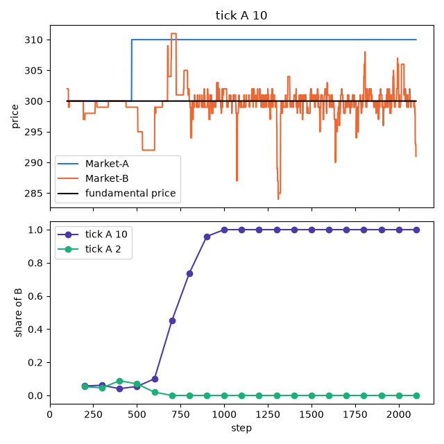
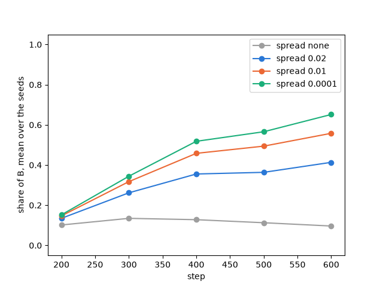

Two markets competing for volume¶
When one stock is traded on two exchanges, traders tend to send their orders where most of the trading already
happens, so a new exchange with a small share of the volume has a hard time taking it from the old one. This
tutorial asks what helps the smaller market: a smaller tick size than its rival, or a market maker that always
quotes in it.
It follows the market-share tutorial of Plham (MarketShareMain
and its use cases on the tick size and on the
market maker), which is based on the studies
listed at the end of this page.
The complete script is tutorial_market_share.py.
It needs matplotlib for the plots, which is not installed with PAMS
(pip install matplotlib).
The model¶
Two markets, Market-A and Market-B, trade the same stock. The traders are
MarketShareFCNAgent agents: FCN agents (Chiarella and Iori, 2002) that can trade in both
markets but send each order to only one of them. The market is drawn at random, with a weight equal to the volume
executed in that market in the current step and the timeWindowSize steps before it (plus \(10^{-10}\)).
A market that trades more therefore receives more orders, and trades even more.
At the start, neither market has traded. The script uses the market class of samples/market_share, which sets
the volume of step 0 from the key tradeVolume (see Writing an event or a market for how to write a market):
class ExtendedMarket(Market):
"""A market whose traded volume at step 0 is set by the key ``tradeVolume``."""
def setup(self, settings: Dict[str, Any], *args: Any, **kwargs: Any) -> None:
"""Set up the market, then set the volume of step 0.
Args:
settings (Dict[str, Any]): the market's block of the config. It can
include "tradeVolume", an int.
*args: passed to :meth:`pams.Market.setup`.
**kwargs: passed to :meth:`pams.Market.setup`.
"""
super().setup(settings, *args, **kwargs)
if "tradeVolume" in settings:
if not isinstance(settings["tradeVolume"], int):
raise ValueError("tradeVolume must be int")
self._executed_volumes = [int(settings["tradeVolume"])]
Market-A starts with a volume of 90 and Market-B with 10, so at first about 90% of the orders go to
Market-A. The volume of step 0 counts only while it is in an agent’s window, that is for its first 100 to 200
steps. After that, a market that has no execution in the window gets almost no orders while the other market
trades, and it cannot recover.
The result is the share of Market-B: the volume executed in Market-B divided by the volume executed in
both markets, in each window of 100 steps of the second session.
A smaller tick size¶
The first configuration is samples/market_share/config.json without its comments. Market-A has a tick size
of 10 and Market-B a tick size of 1:
CONFIG_TICK: Dict[str, Any] = {
"simulation": {
"markets": ["Market-A", "Market-B"],
"agents": ["MarketShareFCNAgents"],
"sessions": [
{
"sessionName": 0,
"iterationSteps": 100,
"withOrderPlacement": True,
"withOrderExecution": False,
"withPrint": True,
},
{
"sessionName": 1,
"iterationSteps": 2000,
"withOrderPlacement": True,
"withOrderExecution": True,
"withPrint": True,
"maxHighFrequencyOrders": 1,
},
],
},
"Market-A": {
"class": "ExtendedMarket",
"tickSize": 10.0,
"marketPrice": 300.0,
"outstandingShares": 25000,
"tradeVolume": 90,
},
"Market-B": {
"class": "ExtendedMarket",
"tickSize": 1.0,
"marketPrice": 300.0,
"outstandingShares": 25000,
"tradeVolume": 10,
},
"MarketShareFCNAgents": {
"class": "MarketShareFCNAgent",
"numAgents": 100,
"markets": ["Market-A", "Market-B"],
"assetVolume": 50,
"cashAmount": 10000,
"fundamentalWeight": {"expon": [1.0]},
"chartWeight": {"expon": [0.2]},
"noiseWeight": {"expon": [1.0]},
"noiseScale": 0.0001,
"timeWindowSize": [100, 200],
"orderMargin": [0.0, 0.1],
"marginType": "normal",
},
}
The sample writes maxHifreqOrders, the old name of maxHighFrequencyOrders (see Sessions),
and the script uses the new name. The key has no effect here, as there is no high-frequency agent. The script
registers the market class, runs the simulation and computes the share of Market-B:
def run_simulation(
config: Dict[str, Any], seed: int, main_steps: Optional[int] = None
) -> SequentialRunner:
"""Run a simulation with the market class of this tutorial.
Args:
config (Dict[str, Any]): the configuration. It is not changed.
seed (int): seed of the random number generator.
main_steps (int, Optional): number of steps of the main session. If None,
the number of the configuration is used.
Returns:
SequentialRunner: the runner after the run.
"""
config = copy.deepcopy(config)
if main_steps is not None:
config["simulation"]["sessions"][1]["iterationSteps"] = main_steps
runner = SequentialRunner(settings=config, prng=random.Random(seed))
runner.class_register(cls=ExtendedMarket)
# hide the two time lines printed by main()
with contextlib.redirect_stdout(io.StringIO()):
runner.main()
return runner
def share_of_b(runner: SequentialRunner, window: int = 100) -> List[float]:
"""Compute the share of Market-B in the volume of each window of the main session.
Args:
runner (SequentialRunner): the runner after the run.
window (int): the number of steps of a window.
Returns:
List[float]: the volume traded in Market-B divided by the volume traded in
both markets, for each window. It is 0 when nothing is traded.
"""
market_a: Market = runner.simulator.name2market["Market-A"]
market_b: Market = runner.simulator.name2market["Market-B"]
session = runner.simulator.sessions[1]
start: int = session.session_start_time
end: int = start + session.iteration_steps
shares: List[float] = []
for time in range(start, end, window):
steps = range(time, min(time + window, end))
volume_a: int = sum(market_a.get_executed_volumes(times=steps))
volume_b: int = sum(market_b.get_executed_volumes(times=steps))
shares.append(volume_b / max(volume_a + volume_b, 1))
return shares
The market rounds the price of each order to its tick size, down for a buy order and up for a sell order. With a
tick size of 10, an agent that would buy at 305 bids 300, and one that would sell at 303 asks 310, so the orders
in Market-A cross less often than in Market-B. Running the script first prints the share of Market-B
with seed 42, with a tick size of 10 and of 2 in Market-A:
steps tick A 10 tick A 2
100-199 0.06 0.05
200-299 0.06 0.05
300-399 0.04 0.09
400-499 0.05 0.07
500-599 0.10 0.02
600-699 0.45 0.00
700-799 0.74 0.00
800-899 0.96 0.00
900-999 1.00 0.00
...
2000-2099 1.00 0.00

With a tick size of 10, Market-B keeps about 5% of the volume until step 499, then takes all of it: after step
834, Market-A has no trade, and its price stays at 310, one of the only two prices at which it traded (300 and
310). With a tick size of 2 and the same seed, the opposite happens: Market-B has no trade after step 510.
One seed shows one path. The script repeats the runs with seeds 42 to 51, with a tick size of 10, 5 and 2 in
Market-A and a second session of 1000 steps:
def compare(
configs: Dict[str, Dict[str, Any]], seeds: Sequence[int], main_steps: int
) -> Dict[str, List[List[float]]]:
"""Run each configuration with each seed.
Args:
configs (Dict[str, Dict[str, Any]]): the configurations, by name.
seeds (Sequence[int]): the seeds.
main_steps (int): number of steps of the main session.
Returns:
Dict[str, List[List[float]]]: for each configuration, and for each seed, the
share of Market-B in each window of 100 steps.
"""
return {
name: [share_of_b(run_simulation(config, seed, main_steps)) for seed in seeds]
for name, config in configs.items()
}
It then prints, for each tick size, the share of Market-B in the last window (steps 1000 to 1099) of each
seed, their mean, and the number of seeds in which Market-B has more than half of the volume:
tick A B wins mean share share of B by seed
10 3/10 0.27 1.00 0.00 0.00 1.00 0.00 0.00 0.00 0.53 0.03 0.15
5 1/10 0.11 0.00 0.00 0.25 0.06 0.00 0.00 0.00 0.12 0.02 0.64
2 0/10 0.03 0.00 0.00 0.00 0.00 0.00 0.00 0.00 0.12 0.02 0.17
The larger the tick size of Market-A, the more often Market-B takes the volume: in 3 of 10 runs with a
tick size of 10, in 1 with 5 and in none with 2. But the smaller tick size is not enough to win: in most runs,
Market-A keeps almost all the volume, because the orders follow the volume and Market-A starts with 90%
of it. A single run can also go against the average: with seed 51, Market-B has 0.64 of the volume with a tick
size of 5 but only 0.15 with 10, since a different tick size changes the whole path of the run.
A market maker¶
The second configuration is samples/market_share/config-mm.json. Both markets have a tick size of 0.00001,
so the tick size plays no role, and a MarketMakerAgent trades in Market-B only:
CONFIG_MM: Dict[str, Any] = {
"simulation": {
"markets": ["Market-A", "Market-B"],
"agents": ["MarketShareFCNAgents", "MarketMakerAgent"],
"sessions": [
{
"sessionName": 0,
"iterationSteps": 100,
"withOrderPlacement": True,
"withOrderExecution": False,
"withPrint": True,
},
{
"sessionName": 1,
"iterationSteps": 2000,
"withOrderPlacement": True,
"withOrderExecution": True,
"withPrint": True,
"maxHighFrequencyOrders": 1,
},
],
},
"Market-A": {
"class": "ExtendedMarket",
"tickSize": 0.00001,
"marketPrice": 300.0,
"outstandingShares": 25000,
"tradeVolume": 90,
},
"Market-B": {
"class": "ExtendedMarket",
"tickSize": 0.00001,
"marketPrice": 300.0,
"outstandingShares": 25000,
"tradeVolume": 10,
},
"MarketShareFCNAgents": {
"class": "MarketShareFCNAgent",
"numAgents": 100,
"markets": ["Market-A", "Market-B"],
"assetVolume": 50,
"cashAmount": 10000,
"fundamentalWeight": {"expon": [1.0]},
"chartWeight": {"expon": [0.0]},
"noiseWeight": {"expon": [1.0]},
"noiseScale": 0.001,
"timeWindowSize": [100, 200],
"orderMargin": [0.0, 0.1],
},
"MarketMakerAgent": {
"class": "MarketMakerAgent",
"numAgents": 1,
"markets": ["Market-B"],
"assetVolume": 50,
"cashAmount": 10000,
"targetMarket": "Market-B",
"netInterestSpread": 0.02,
"orderTimeLength": 2,
},
}
The market maker is a high-frequency agent: after the order of the normal agent, in every step of both sessions
(maxHighFrequencyOrders is 1, and so is its default), it places a buy order and a sell order of one share around
the middle \(c\) of the best buy and sell prices of Market-B, its only tradable market. With the spread
\(s\) (netInterestSpread) and the fundamental price \(P^f = 300\), it buys at \(c - P^f s / 2\)
and sells at \(c + P^f s / 2\). Its orders expire after orderTimeLength = 2 steps. The details are in
Agents.
The script runs seeds 42 to 51 without the market maker and with a spread of 0.02, 0.01 and 0.0001, with a second session of 500 steps. It changes the configuration with this function:
def with_spread(spread: Optional[float]) -> Dict[str, Any]:
"""Make a copy of ``CONFIG_MM`` with another spread of the market maker.
Args:
spread (float, Optional): the spread of the market maker. If None, the
market maker is removed.
Returns:
Dict[str, Any]: the new configuration.
"""
config: Dict[str, Any] = copy.deepcopy(CONFIG_MM)
if spread is None:
config["simulation"]["agents"].remove("MarketMakerAgent")
else:
config["MarketMakerAgent"]["netInterestSpread"] = spread
return config
It prints the share of Market-B in the last window (steps 500 to 599):
spread B wins mean share share of B by seed
none 0/10 0.10 0.00 0.08 0.21 0.31 0.00 0.00 0.00 0.08 0.23 0.06
0.02 2/10 0.41 0.00 0.31 0.40 0.53 0.39 0.29 0.42 0.49 0.43 0.87
0.01 6/10 0.56 0.00 0.29 0.70 0.55 0.80 0.41 0.50 0.82 0.51 1.00
0.0001 8/10 0.65 0.00 0.32 0.86 0.75 0.80 0.57 0.83 0.85 0.54 1.00

Without the market maker, Market-B keeps about its initial 10% on average and wins in no run. With the market
maker, its share rises in every run but one, and the more so the smaller the spread: the market maker’s orders are
close to the middle price, so an order sent to Market-B is more likely to find a counterpart and be executed,
and the volume draws more orders. Note that the share counts all the volume of Market-B, including the trades
of the market maker.
Seed 42 is the exception: with every spread, Market-B has no trade at all in the second session. The few
orders sent to it early do not meet the market maker’s orders, its weight falls to almost zero when the volume of
step 0 leaves the windows, and no agent chooses it again.
Differences from Plham¶
Plham writes the volume of each step and computes the share of
Market-Bover the past 100 steps with an R script. Here, the script computes it in Python, in consecutive windows of 100 steps.The tick size use case of Plham uses a tick size of 5 in
Market-A(config-01.json) and shows one run in whichMarket-Btakes all the volume around step 1000, and a slower rise with a tick size of 2. The PAMS sample uses 10. Over ten seeds, PAMS finds the same direction, butMarket-Bwins only in 1 of 10 runs with a tick size of 5.The market maker use case of Plham shows the prices of one run with a spread of 0.02, and the share of
Market-Bin one run each with 0.01 and 0.0001, in which the smaller spread letsMarket-Btake the volume faster. PAMS finds the same order over ten seeds, with one seed (42) in whichMarket-Bdoes not gain.The agents count the volume of a market differently when they choose where to send an order.
MarketShareFCNAgentsums the executed volume of the steps \(t - \tau\) to \(t\), the current step included, and adds \(10^{-10}\) to each weight. The agent of the Plham sample sums the steps \(t - \tau\) to \(t - 1\) and adds nothing. Here \(t\) is the current step and \(\tau\) istimeWindowSize, or \(t\) when it is smaller.
References¶
Chiarella, C. and Iori, G. (2002). A simulation analysis of the microstructure of double auction markets. Quantitative Finance, 2(5), 346–353. https://doi.org/10.1088/1469-7688/2/5/303
水田孝信, 早川聡, 和泉潔, 吉村忍 (Mizuta, Hayakawa, Izumi and Yoshimura) (2013). 人工市場シミュレーションを用いた取引市場間におけるティックサイズと取引量の関係性分析. JPXワーキング・ペーパー, Vol. 2, 日本取引所グループ.
草田裕紀, 水田孝信, 早川聡, 和泉潔, 吉村忍 (Kusada, Mizuta, Hayakawa, Izumi and Yoshimura) (2014). 人工市場を用いたマーケットメーカーのスプレッドが市場出来高に与える影響の分析. 人工知能学会全国大会論文集, JSAI2014, 3L3-OS-26a-2. https://doi.org/10.11517/pjsai.JSAI2014.0_3L3OS26a2
草田裕紀, 水田孝信, 早川聡, 和泉潔 (Kusada, Mizuta, Hayakawa and Izumi) (2015). 保有資産を考慮したマーケットメイク戦略が取引所間競争に与える影響:人工市場アプローチによる分析. 人工知能学会論文誌, 30(5), 675–682. https://doi.org/10.1527/tjsai.30_675
Plham: MarketShareMain, MarketShareMain_UseCases01 and MarketShareMain_UseCases02.